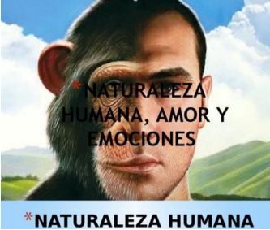
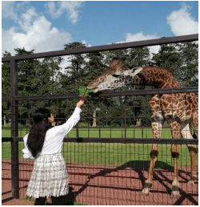
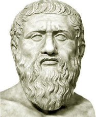

<!doctype html>
<html>

<head>
  <meta charset="utf-8">
  <meta http-equiv="X-UA-Compatible" content="IE=edge">
  <meta name="viewport" content="width=device-width, initial-scale=1">
  <title>LECCION 4</title>
  <link href="css/multiColumnTemplate.css" rel="stylesheet" type="text/css">
  <!-- HTML5 shim and Respond.js for IE8 support of HTML5 elements and media queries -->
  <!-- WARNING: Respond.js doesn't work if you view the page via file:// -->
  <!--[if lt IE 9]>
      <script src="https://oss.maxcdn.com/html5shiv/3.7.2/html5shiv.min.js"></script>
      <script src="https://oss.maxcdn.com/respond/1.4.2/respond.min.js"></script>
    <![endif]-->
  <link rel="shortcut icon" href="iconos/filosofia.png">
  <style>
		.respuesta {
			font-family: Arial, Helvetica, sans-serif;
			font: size 80%;
			color: blue;
			margin-left: 100pt;
		}
	</style>
</head>

<body style="color: black">
  <div class="container">
    
    
    
    <header>
      <div class="primary_header">
        <h1 class="title">Lección 4. Emociones y decisiones&nbsp;</h1>
      </div>
      <nav class="secondary_header" id="menu">
        <ul>
          <a href="dream.html">
            <li>LECCION 1&nbsp;</li>
          </a>
          <a href="leccion2.html">
            <li>LECCION2&nbsp;</li>
          </a>
          <a href="leccion3.html">
            <li>LECCION 3&nbsp;</li>
          </a>
          <a href="leccion4.html">
            <li>LECCION 4&nbsp;</li>
          </a>
          <a href="leccion5.html">
            <li>LECCION 5&nbsp;</li>
          </a>
          <a href="index.html">
            <li>INICIO&nbsp;</li>
          </a>
        </ul>
      </nav>
    </header>
    <div class="row">
      <div class="columns">
        <p class="thumbnail_align">  </p>
        <a href="#x">
          <h4>EXPLORANDO</h4>
        </a>

      </div>
      <div class="columns">
        <p class="thumbnail_align">  </p>
        <a href="#x1">
          <h4>COMPRENDIENDO</h4>
        </a>
      </div>
      <div class="columns">
        <p class="thumbnail_align">  </p>
        <a href="#x2">
          <h4>PRACTICANDO</h4>
        </a>

      </div>
      <div class="columns">
        <p class="thumbnail_align">  </p>
        <a href="#x3">
          <h4>AUTOEVALUACION</h4>
        </a>

      </div>
      <div class="columns">
        <p class="thumbnail_align">  </p>
        <a href="#x4">
          <h4>&nbsp;INVESTIGANDO</h4>
        </a>

      </div>
    </div>
    <section>
      <h2 class="noDisplay">Main Content</h2>
      <article>

        <h3 id="x">Observa la siguiente imagen, reflexiona y contesta las preguntas.&nbsp;</h3>
        
        <p class="pregunta">¿Qué características tenemos los seres humanos, que nos diferencian de los animales?</p>
        <p class="respuesta">Todos somos animales</p>
        <p class="pregunta">¿Qué crees que diferencie al ser humano de los otros seres vivos?</p>
        <p class="respuesta">Tambien somos seres vivios</p>
        <p class="pregunta">¿Qué nos define como especie humana?</p>
        <p class="respuesta">Nuestras caracteristicas</p>
        <p class="pregunta">¿Los seres humanos estamos conscientes de que poseemos una mente y un cuerpo?</p>
        <p class="respuesta">SI</p>

        <h4 id="x1">COMPRENDIENDO</h4>
        <h3>Naturaleza Humana</h3>
        <p>Es el concepto filosófico, según el cual los seres humanos tienden a compartir una serie
          de características distintivas inherentes, que incluyen formas de pensar, sentir y actuar en
          el medio en el cual se desenvuelven. Conjunto de características de pensamiento o acción
          que tienen los humanos en común, la cual es determinada por las acciones no solo a nivel
          individual, sino también por las acciones que se realizan a nivel colectivo. 5</p>
        <h3>Razón</h3>
        <p>
          El concepto de razón tiene su origen en el latín ratio. El diccionario de la Real Academia
          Española (RAE) reconoce más de diez acepciones de esta palabra, la facultad para pensar
          como reflexionar e inferir el argumento que se expone en respaldo hacia una determinada
          cosa como el motivo o causa, y el cociente de dos cifras
        </p>
        <p>
          Etimológicamente proviene del griego logos. Hace referencia directa a la palabra y, por
          tanto, a la reflexión discursiva. Por la palabra el ser humano piensa y se relaciona con la
          realidad que lo rodea. Así, la razón requiere de la palabra y por ella es que funciona. La
          razón es por tanto, la cualidad que permite crear relaciones por medio de la palabra.
        </p>
        <h3>Reflexión “Relación mente-cuerpo”</h3>
        <p>Por el concepto de relación Mente-cuerpo se entiende aquella problemática filosófica que
          alude a la naturaleza del vínculo entre la mente y el cuerpo humano, así como a intentar
          determinar cuál de esos elementos es el predominante en la relación… Lo importante de
          este concepto, es que nos permite pensar al hombre como una realidad compleja en la
          cual convergen tanto las emociones y las afecciones del cuerpo, así como también la
          capacidad de abstracción racional de la mente. El concepto de “Relación Mente-Cuerpo”
          hace alusión, pues, a la necesidad de pensar al hombre como un ser vivo que se encuentra
          constituido por un cuerpo y que es consciente a través de su mente de sus afecciones,
          emociones y pasiones…. La reflexión en torno a la relación mente-cuerpo nos permite
          tener un mayor conocimiento sobre nosotros mismos en tanto seres humanos y
          “personas”, así como a hacernos conscientes de la forma en que las emociones influyen
          en nuestro pensamiento y viceversa. </p>

        <p class="pie">
          5
          Fuente original COSDAC. Plataforma de temas de Filosofía. Documentos, galería de imágenes, poster Naturaleza
          Humana.
          En la liga
          http://humanidades.cosdac.sems.gob.mx/temas/wp-content/uploads/rtMedia/groups/3/2018/05/posternaturaleza-humana.jpg.
          Consultado el 01 de octubre de 2019.
          6
          Fuente original COSDAC. Plataforma de temas de Filosofía. Vocabulario. En la liga
          http://humanidades.cosdac.sems.gob.mx/temas/vocabulario/relacion-mente-cuerpo-a-i-1/ Consultado el 01 de
          octubre de
          2019
        </p>
        <h3>Reflexión “Emoción y Sentimiento” –Fragmento</h3>
        <p>Una emoción es un modo en el que percibo las cosas y en que me ubico durante un lapso
          de tiempo determinado. Se distingue del sentimiento en el siguiente
          sentido: el sentimiento llamado amor puede producir varias emociones, como alegría,
          temor, ansiedad, euforia, enojo; al amar uno se pone alegre, teme la pérdida, ansía la
          reunión, se entusiasma eufóricamente con la sorpresa y se enoja con la frustración o los
          celos.</p>
        <p>Una emoción es un modo en el que percibo las cosas y en que me ubico durante un lapso
          de tiempo determinado. Se distingue del sentimiento en el siguiente
          sentido: el sentimiento llamado amor puede producir varias emociones, como alegría,
          temor, ansiedad, euforia, enojo; al amar uno se pone alegre, teme la pérdida, ansía la
          reunión, se entusiasma eufóricamente con la sorpresa y se enoja con la frustración o los
          celos.</p>
        <p>Las emociones no sólo son el estado desde y según el cual percibimos al mundo. Nos
          emocionamos con algo y eso luego se nos pasa esa emoción, pero las consecuencias de
          lo que hacemos durante nuestra emoción las enfrentamos aún después de que éstas han
          terminado y nos vemos en situaciones en las que ya no vale decir cosas como “no sabía lo
          que hacía”, “no fui yo, fue mi enojo el que dijo eso” o “es que lo hice porque estaba
          deprimido”; y no cabe decir cosas como esas ya que efectivamente aunque la emoción es
          pasajera, nuestros actos tienen consecuencias que llegan después. Sobre las
          consecuencias de nuestro temperamento y las emociones a las que podemos ser
          propensos.</p>
        <h3>Cosas que distinguen a los seres humanos de los animales</h3>
        <p>Entre las preguntas cruciales o
          fundamentales que los seres humanos se han
          planteado a lo largo de la historia, existe una
          que, aunque parece sencilla de responder,
          pues aparenta sólo una comparación entre los
          seres vivos, en realidad no lo es.</p>
        
        <p>La pregunta la que nos referimos es ¿qué nos
          hace humanos y qué nos hace diferentes de
          las demás especies? La respuesta a esta
          interrogante no surgen en una primera
          reflexión, aun cuando convivamos día a día
          con los demás seres vivos.
        </p>
        <p>La comparación, en un primer momento,
          proporcionar un conjunto de rasgos físicos
          (materia) aparentemente contundentes; pero,
          en un segundo momento cuando la
          comparación va más allá y refiere a La comparación, en un primer momento,
          proporcionar un conjunto de rasgos físicos
          (materia) aparentemente contundentes; pero,
          en un segundo momento cuando la
          comparación va más allá y refiere a </p>
        <h3>Lee los textos, reflexiona y contesta las preguntas.</h3>
        <h3>Diferencias según Plantón, entre el ser humano y las otras especies (Fragmento)</h3>
        
        <p>Platón señala las diferencias entre los seres humanos y
          otras especies, advierte que separarlos sólo por las
          capacidades de razonar conlleva pensar en dos grupos de
          animales; los racionales y los irracionales, quedando en el
          primero, únicamente, el ser humano. Platón aclara, por
          tanto, que los humanos han utilizado una peculiaridad de su
          ser para separarse de todos los demás seres, olvidando
          que, en realidad, tenemos elementos comunes con ellos.</p>
        <p>Si en lugar de haber sido los humanos los seres racionales
          del mundo lo hubiesen sido las grullas, entonces éstas
          habrían clasificado a los animales en dos grupos, el de las
          grullas y el de los animales irracionales, clasificación que
          sería arbitraria e ilegítima, pues privilegia y aísla a quienes
          la brindan, en este último caso, a las grullas. Por eso, en el diálogo “Político” coloca al
          humano en el mundo en su justo lugar, no como una especie aparte de los demás
          animales, sino como un ser más en el mundo que tiene la peculiaridad de pensar, pero
          que cuenta con un sinfín de características que lo unen a otras especies. Así, el ser humano
          se distingue por su razón, pero no está aislado de los demás seres. Por ejemplo, el
          humano es un animal terrestre, al igual que muchos otros, por tanto tiene pies, pero no
          tiene pezuñas sino uñas; de modo similar, no tiene cuatro patas sino dos pies, es un bípedo;
          y tampoco tiene plumas con otros bípedos (las aves), antes bien un implume, por eso el
          humano es, para Platón, un bípedo implume. En esta distinción física termina por ser un
          animal terrestre, de dos patas pero sin plumas, que comparte características de otros
          seres, y además, razona. </p>
        <p>Esta forma de expresarse de Platón muestra el ser humano como un ser diferente a otras
          especies, pero unido a ellas. En concreto, lo regresa a la realidad y lo coloca sobre la
          tierra, advirtiendo que tiene la capacidad de pensar, como las aves la capacidad de volar,
          y que eso no lo hace superior. Por tanto, no es el humano un ser ajeno o dueño del mundo,
          antes bien, es del mundo.</p>
        <p>¿Qué características son comunes en los seres humanos y otras especies?</p>
        <p class="respuesta">El instinto de sobrevivir</p>
        <p>¿Qué características no se comparten los humanos con otras especies?</p>
        <p class="respuesta">las guerras</p>
        <h3>¿Que nos hace humanos? </h3>
        <p class="respuesta">nolose</p>
        <p>Junto a la cuestión sobre que distingue los seres
          humanos de otras especies, se encuentra la pregunta
          ¿Qué nos hace ser humanos? Humano proviene del latín
          humus que significa tierra, y que alude a la materia con
          que fue formado el primer hombre en la tradición judeocristiana; se enlaza con el latín humanus, que a su vez
          se relaciona con homo-hominis, de donde proviene la
          palabra hombre, tradicionalmente, el concepto humano
          designa al nombre como género humano no sexual, pues
          refiere a los dos miembros de la especie y no sólo al
          varón</p>
        <p>Aunado a lo anterior, humano se usa para expresar la
          idea de un ser que vive de acuerdo con la razón, es decir,
          que no se orienta solo por sus deseos e instintos, sino
          que, usando la razón actúa de modo distinto a ellos, pues
          es capaz de controlar sus acciones. Ser humano implica
          determinar qué hacer, cuándo hacer y cómo hacer.</p>
        <p class="pregunta">¿Cómo debes de vivir? </p>
        <p class="respuesta">Como a mi me plazca</p>
        <p class="pregunta">¿Cómo me tengo que relacionar con los otros?</p>
        <p class="respuesta">No tengo por que hacerlo</p>
        <p class="pregunta">¿Qué significa para el término “ser un ser humano”?</p>
        <p class="respuesta">en realidad no lo se</p>
        <h3>Naturaleza humana</h3>
        <p>La palabra naturaleza proviene de la palabra natura, la cual expresa la condición bajo la
          cual lo seres humanos nacen o viene al mundo, es decir se refiere a aquellas
          características que son propias de su ser y que lo identifican en el mundo. Entonces
          naturaleza es el modo de ser y de operar propio de cada ser vivo que habita en el planeta. </p>
        <p>Lo material de la naturaleza humana y su cuerpo, que no es como cualquier otro existen
          en la Naturaleza. La materia humana es única e irrepetible, aun cuando su estructura
          parezca cercana a la de algunos primates no humanos… Lo racional de la naturaleza
          humana es la mente, ella es el elemento material que mueve el ser humano, por ello
          poseemos dos modos hacer nuestra naturaleza, uno racional y otro irracional, tal como
          los señala Aristóteles en la Ética Nicomaquea.</p>
        <h4 id="x2">
          <h4>
            <p class="pregunta">¿Cuál es la naturaleza del ser humano?</p>
            <p class="respuesta">El ser humano es bueno por naturaleze es la sociedad quien lo corrompe</p>
            <p class="pregunta">¿El ser humano está consciente de su cuerpo y de mente?</p>
            <p class="respuesta">SI</p>
            <p class="pregunta">El cuerpo pertenece al mundo material y la mente es inmaterial. ¿Es correcto lo
              anterior? </p>
              <p class="respuesta">SI</p>
            <p class="pregunta">¿Cuál es el sentido de la vida humana?</p>
            <p class="respuesta">En realidad no tiene un sentido, tu le das tu propio sentido a tu existencia
              tu decides que hacer de tu vida y como vivirla
            </p>
            <p class="pregunta">¿Cuál es el sentido de tu vida?</p>
            <p class="respuesta">yo creo que el verdadero sentido esta en vivir bien contigo mismo disfrutando de las pequeñas cosas de la vida
              en realidad nada importa solo vive o no.</p>
            <p class="pregunta">¿El sentido de la vida define tus creencias? Explica.</p>
            <p class="respuesta">Muchas personas encuentran un sentido en sus creenias los ayuda a sobrellevar esta vida
              de porqueria
            </p>

            <h4 id="x3">AUTOEVALUACION</h4>
            <table border="1" style="width: 30cm; height: 10cm;color:black; margin-left: 5pt;">
              <tr>
                <th>INDICADORES</th>
                <th>PUEDO LOGRARLO</th>
                <th>TENGO DUDAS</th>
              </tr>
              <tr>
                <td>Reconozco qué es el conocimiento empírico.</td>
                <td>x</td>
                <td></td>
              </tr>
              <tr>
                <td>Comprendo por qué el conocimiento empírico se adquiere a través de los sentidos</td>
                <td></td>
                <td>x</td>
              </tr>
              <tr>
                <td>Distingo en mi vida los distintos modos de pensar.</td>
                <td>x</td>
                <td></td>
              </tr>

              <tr>
                <td>Comprendo qué es conocimiento racional.</td>
                <td>x</td>
                <td>x</td>
              </tr>
              <tr>
                <td colspan="3">¿Sobre qué temas requiero más Asesoría Académica?
                  <p>NINGUNO</p>
                </td>
              </tr>
            </table>
      </article>

    </section>

    <footer>
      <h4 id="x4"></h4>
      <ul type="circle">
        <li>Braun, E. (2002), El saber y lo sentidos, México, Benemérita Universidad
          Autónoma de Puebla.</li>
        <br>
        <li>Descartes, R. (1982), El discurso del método, Buenos Aires, Edaf. </li>
        <br>
        <li>García, J. (2011), La estética como disciplina filosófica del conocimiento, México,
          UNAM-FES ACATLÁN. </li>
        <br>
        <li>Kant, I. (2006), Critica de la razón pura, Madrid, Taurus. </li>
        <br>
        <li>Desencajar el pensamiento, disponible en:</li>
      </ul>
      <p style="margin-left: 5%;"><a
          href="https://www.youtube.com/watch?v=X3_cl-lPYwk">https://www.youtube.com/watch?v=X3_cl-lPYwk</a></p>
      <br>
      <div class="copyright"><strong>REDES SOCIALES DEL CREADOR</strong></div>
      <div class="social">
        <p class="social_icon"><a href="https://www.facebook.com/erick.ortz.1" class="pie"></a> </p>
        <a href="https://www.instagram.com/erickortzg/" class="pie">
          <p class="social_icon"></p>
        </a>
        <a href="https://wa.me/5573235208" class="pie">
          <p class="social_icon"></p>
        </a>
        <a href="https://twitter.com/?lang=es" class="pie">
          <p class="social_icon"></p>
        </a>
      </div>

      <div class="copyright">&copy;<strong>ERICK ORTIZ</strong></div>
    </footer>
  </div>
</body>

</html>